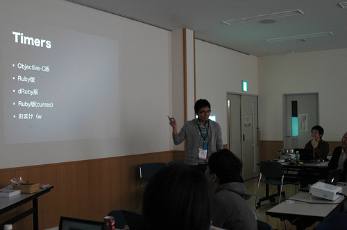
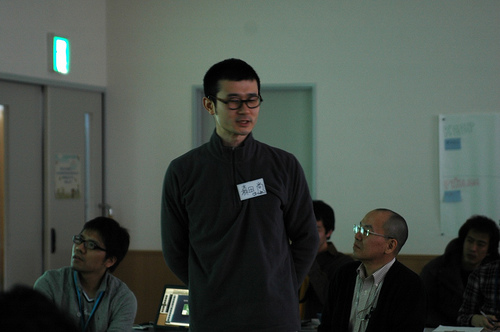
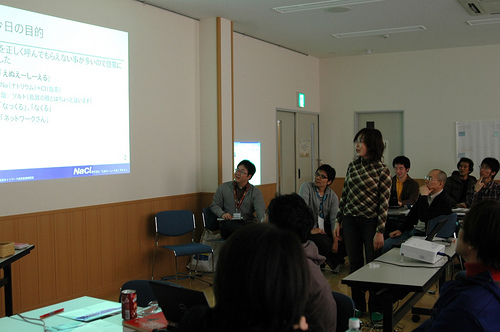
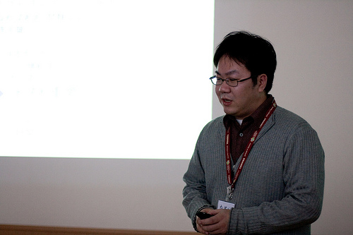
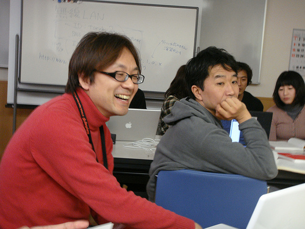
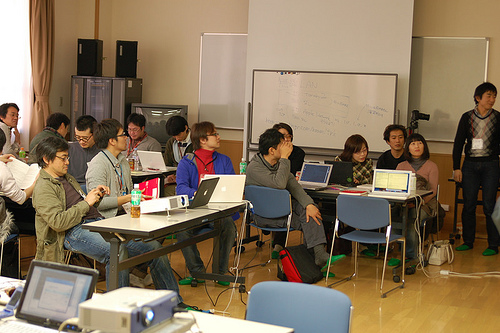
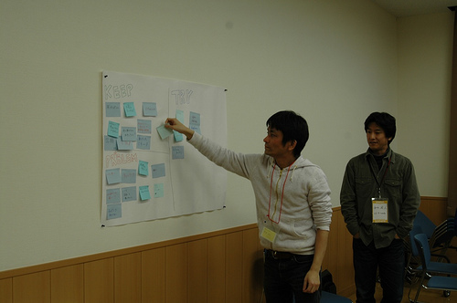
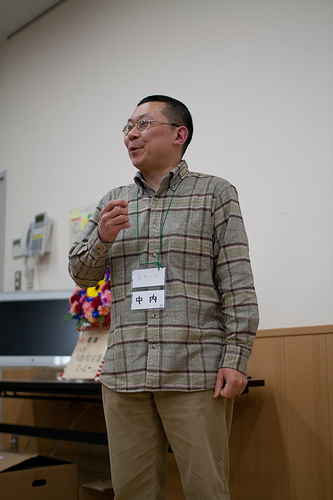
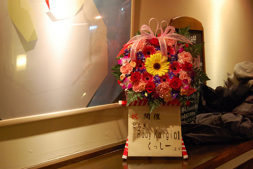

RegionalRubyKaigi レポート (07) とちぎ Ruby 会議 01
書いた人: 渋川よしき
RegionalRubyKaigi レポート (07) とちぎ Ruby 会議 01
はじめに

taken by sinara.hara
2009 年 2 月 21 日、前日の残雪が残り、時折粉雪がちらつくような冷たい空の下でとちぎ Ruby 会議 01 が開催されました。場所は那須塩原駅の近くの公民館です。開催母体は、西那須野で毎月勉強会を開催している「とちぎ Ruby の会」です。今回は Ruby を初期のころからサポートされてきた、原信一郎さんと、後藤謙太郎さんをお呼びして、進歩の早い Ruby や LL 業界のなかでの変わらぬ価値、姿勢などのお話を伺いました。そして、参加者全員参加でいつものとちぎ Ruby の勉強会の雰囲気を味わっていただきました。思いがけず栃木の厳しい冬も同時に体験していただくことになってしまいましたが、短い準備・募集期間にもかかわらず、「イベントや勉強会は初めて！」という方も含めて、予想を上回る参加がありました。
とちぎ Ruby 会議 01 について
- 開催日
- 2009/2/21 (土) 13:00〜16:45
- 開催場所
- 東那須野公民館
- 開催母体
- とちぎ Ruby の会
- 後援
- 日本 Ruby の会
- 参加者
- 31人
- 動画・資料
- とちぎ Ruby の会の Wiki の資料集
プログラム
「博士の愛した Ruby と数学」原信一郎さん (長岡技術科学大学)

taken by recompile_net
Ruby との接し方の哲学的なお話と、ものすごくピンポイントの人をターゲットにしたライブラリ、そしてコダワリの文房具と盛りだくさんなセッションでした。ネタも多く、笑いが絶えませんでした。
モノは考えよう
2000 年の Linux カンファレンス以来の発表という原さん。最初は軽い自己紹介や Ruby との関わりからお話が始まったのですが、いきなり「数学を教えているが因数分解が苦手」というカミングアウトがあり、その後は「原ワールド」炸裂でした。「博士の愛した数式」という映画を取り上げ、主人公が記憶障害の克服のためにメモを使っている話から「この映画の主人公ほどでなくても、目が悪いからメガネをかけるなど、程度の差はあっても、誰しもハンディキャップを持っていて、それを克服している」という原さんの気づきを披露されました。そして「苦手な計算を代わりにやってくれる Ruby プログラムは、脳の延長である」という論理展開があって「Ruby は体の一部だ」と断言されていました。
Algebra
原さんの仕事を楽にするのがこの Algebra です。この代数を解くプログラムを使い、因数分解から、連立方程式から、幾何学から、組み合わせ問題から、数多くの問題を Ruby で解く方法を紹介されていました。このプログラムを使うと「3 日かかっていた試験問題作成が 1 時間でできるようになった」とのことです。自分自身の手で作る目的としては「自分の弱点(障害)を克服する」「手に馴染む」「励みになる」とのことでした。
22 世紀 Ruby
今回のもう一人の講演者である後藤謙太郎さんの発表のテーマをもじった話もありました。今回はそんなに準備期間もなかったなか、他の出演者の内容を見てそれに対するパロディを盛り込んでくるというあたりは、かなり心憎い演出です。道具と機能という観点で「Ruby は人間が使うモノ」という方向から Ruby の未来像について説明されていました。事例として出てくる、ジーンズの裾の縫い上げをするだけの機械を示して、機能美について説明されていたのが印象的でした。この話自体、かなり面白かったのですが、実はこのコーナーの中で出てくる文房具の話をするのが一番の目的だったのではないか、というのもちょっと思いました。それだけ原さんが生き生きと文房具話をされているのが印象的でした。文房具に対しても「計算をする人間と紙の間にあるのがペン。投げ出しそうになった瞬間に、あと 10 秒余計に考えられるかどうかはペンで決まる」という殺し文句はかっこよかったです。
原メソッド各種
原さんのお話を聞くのは初めてでしたが、色々工夫されていて面白い発表でした。まずはスライドの中に突然現れるタイムテーブル。時間が早すぎないか、遅れていないかをチェックされていました。最後のページには遅れた時用の「おわび」のスライドが入っているあたりが丁寧すぎてびっくりしました。そして、最後のページに、言いたいことを忘れないようにするためのメモスライド。「Ruby は体の一部」と言いうだけでなく「スライドにも自分の発表の手伝いをしてもらう」という徹底的な姿勢がかいま見えました。
まとめ
とちぎ RubyKaigi という学びの場において、「工夫をして、仕事の障害になっているものを解決し、効率を上げる」という学習のゴールの先の未来像を見せて頂きました。もちろん人によりゴールは違いますが、「がんばればこういうこともできる。がんばろう」というのが原さんからのアドバイスだったのではないか、と思います。Ruby を学ぶ動機を改め奮い起こさせるようなセッションでした。
「20 世紀 Ruby」後藤謙太郎さん (株式会社シングラム)

taken by mame_n
ごとけんさんこと後藤健太郎さんが、過去作ってきたプログラムやモジュールの話を交えつつ、単なる技術にとどまらず、Ruby を通して自分を高める方法について、じっくりと聞かせるセッションでした。
とちぎ Ruby との関わり
今回の RubyKaigi はとちぎ Ruby が母体で開催されているのですが、まずはこのとちぎ Ruby との関わりから話が始まりました。BT ( before toruby )の時の話に始まり、2000 年の Perl/Ruby カンファレンスの時のセッションの内容の紹介をされていました。2000 年というともう 10 年も前の話ですが、今聞いても面白そうな内容が多いですね。
Ruby で開発する楽しみ
ごとけんさんが Ruby 歴中で数多くのプログラムを通じて学んでこられたことを総括して「Ruby の楽しみ方」として紹介していただきました。Ruby を使う場として、ファイル処理、文字列処理、仕事上の便利ツールの開発、数値計算、ネットワーク、バッチ処理などがあるとして、これらの分野での実用例を紹介されていました。例えば、gnuplot の設定ファイルを自動生成して裏で実行させることで、キー操作で視点変更を簡単に実現するプログラムというのを紹介されていました。また、これ以外でも「MixIn といった技術で触るのを目的とする」こともあるそうです。また、アイディアさえあれば、今まで難しいと思われていたネットワークの領域であっても簡単に実現できるのが Ruby ということでした。数学の領域は「最後に残ったフロンティア」だそうです。
開発からさらに広がる楽しみ
ただ使うだけでなく、使ってもらうことで、楽しみがさらに広がるそうです。間違いの指摘や、公開したプログラムから仲間が広がったり、想定外の反応があったりするそうです。ベンチマークのモジュール(今は標準ライブラリに添付)が ruby-list のメーリングリスト上でブームになったこともあり、雑誌のネタにしたこともあるそうです。これらの経験を通じて学んだ「やって良かったこと」として以下のようなことを紹介されていました。
- かっこよさを捨ててでも、まず動くモノを作る
- アルゴリズムなどの基礎的なことをきちんとトレーニングする。基礎の組み合わせでかなり多くのことができるようになる
- 公開する。ruby-list などの ML で公開することが多かったが、今は github などの公開リポジトリも使える
また、「改善した方が良かったこと」も併せて紹介されていました。
- メンテナンスをきちんとする
- いらない機能を作ると、メンテナンスも大変になる
- バックアップを取らないで、データを飛ばしてしまったことがある
まとめ
「とちぎ Ruby にはずっと参加したかった」と、ごとけんさん。今回のお話は「Ruby の勉強を通じて楽しみつつ自分を高めよう」という、とちぎ Ruby や参加者への応援メッセージだった気がしました。
ライトニングトークス
いろいろなところで開催されいるライトニングトークスですが、今回は「初めてトークスしてみました」という方も多く参加されました。
米澤慎 「タイマーからはじめる本当の Ruby」

taken by mame_n
とちぎ Ruby でいつも司会進行をしていただいている米澤さんの 2 回目の LT。もっとやっているかと思われたのですが、意外でした。いろいろな言語でのライトニングタイマーを開発をして学んだ、「目的を持って開発すると勉強になる」というのがテーマでした。確かに題材としても、ライトニングトークスのタイマーはお手頃かもしれませんね。Ruby から Objective C までいろいろなタイマーの紹介がありました。COBOL 製のタイマーは作っている人はいないと思われますのでぜひお願いします。
森田尚 「組み込み Rake：Rake で作るお手軽ビルドツール」

taken by mame_n
今回の発表の中では、原さんと同じぐらい「Ruby を仕事にフル活用しています」という内容の発表でした。既存のツールを活用することで、コンパクトで効果の大きい開発をされていました。ムービーを使って、ツールが動作して Web サイトを PDF 化する過程を見せて頂きました。オープンソースならではのメリットを生かした、エンドユーザに近い場での活用方法ということで、Ruby を知らない人に Ruby の便利さを知ってもらうにも、この発表はいいかもしれません。
大川祐介 「Ruby 初心者！」

taken by mame_n
とちぎ Ruby に今年から加入した大川さんの発表でした。Ruby に触れたばかり、というフレッシュな視点で Ruby を語るというものでした。このような発表をすると、自分がどのような理解をしているのかが確認できますし、また、周りの人からのアドバイスももらいやすくなります。多少、次の toRuby で暖かい突っ込みや、補足が他のメンバーからされることと思いますが、IT 技術者の近道勉強法の実践例ですね。ぜひ、「初心者で LT なんかとんでもない」と思われている方は大川さんの発表は参考になると思います。
stsuboi「最強の Ruby 環境獲得のために：Apple 製品格安購入術」

taken by you_ssk
今回のライトニングトークスの中では、一番みんなが前のめりになって聞いていました。世界的な不景気の中、それを逆手にとって「Apple 製品を安く買うには？」という研究と実践の成果でした。Apple 製品の世界的な値付けの分析まで行われ、実際に韓国で買うためのアドバイスが含まれていました。新しい Mac mini が発表されたりしていますので、追加の研究発表が期待されます。資料を見ると物欲が刺激されてしまいますのでご注意を。
安藤葉子 (株式会社ネットワーク応用通信研究所) 「NaCl は塩化ナトリウムなのでエヌエーシーエルと読んでください」

taken by mame_n
社内の暴露 LT 。もしくは新手の採用活動？社内のメンバーの 失敗談 武勇譚を初めとして、仕事の環境や仕事内容、会社の構成員から会社に行くための地図まで、短時間でしっかりと紹介されていました。知り合いの女性で「IT イベントは男性が多いので婚活にいい気がする」と言っている方がいましたが、就活の場としても、もっと活用の余地がありそうですね。どなたか学生さんで「こういう僕を雇ってくれませんか？」という就活 LT とかやってみてはいがかですか？
樽家昌也 (日本 Ruby の会) 「分散 unit/test」

taken by recompile_net
ユニットテストの高速化のために、プロセスをフォークして CPU の能力をつかいこなしてみよう、というトークスでした。「前半はコードの変更が多いのでテストが重要」といった、実践者ならではの言葉や、caller を使って解析を行っていったり、「標準ライブラリをコードリーディングして勉強」など、数多くのテクニックを披露されていました。この過程の話はユニットテストの改良だけでなく、多くの開発者にとって汎用的にためになるお話でした。
toRuby勉強会

taken by sinara.hara 
taken by you_ssk
「いつものとちぎ Ruby の雰囲気を味わってもらう」というのが今回のとちぎ RubyKaigi の目的のひとつでもあります。いつもの toRuby の拡大版を参加者全員で行いました。日記等で感想を見る限り、この目的は達成されたと思います。
勉強会の内容
このセッションでは、基本的に真ん中で講義する人もとくにおらず、それぞれの席で近場 のメンバー同士で話をしながら進めて行くという形式で進みました。そのため、レポートはすごく書きにくいセッションなんですが、やったことを大まかに書こうと思います。当日は、各自 PC を持ってきてもらいました。そして、dRuby の書籍のサンプルコードのリマインダーを入力して動作させ、みんなで irb でお互いのオブジェクトにメッセージを送りあったりして楽しみました。まずは咳さんが準備されていたメッセージサーバにメッセージを送って表示する、というのを少し試したあとに(ネットワークがここでダウン)、dRuby 本のサンプルを見ながら、リマインダーを作って、お互いに登録しあったりしました。
ネットワークの接続で手間取った方がいたり、Ruby の処理系の違い( Windows 上だと irb がロックしてしまうことがある)などの苦労をされた方も中にはいましたが、ネットワークをつなげて動作させる楽しみを知っていただいたり、お互いに教え合ったり、脱線して高度な話に行ってみたりという、いつものとちぎ Ruby らしさが出ていたのではないかと思います。実際に動かしたコードは dRuby 本の P16 〜 P18 と、ほんのちょっとでしたが得るものは大きかったと思います。
実際に dRuby で勉強会をしてみたい方へ
実際に toRuby と同じスタイルで勉強会をしてみる場合には肝になるのがネットワークです。今回は Air Mac を用意して、無線 LAN で行く作戦でしたが、接続数が多くなってしまい途中でダウンしてしまいました。10 人ずつぐらいに分かれて島(アクセスポイント)を作ったほうがいいかもしれません。また、アドホックモードで接続するのも手です。無線 LAN の接続に関しては、Windows XP だと苦戦する方がたまに見受けられます。世の中では Vista の評価はイマイチですが、無線 LAN を気軽につなぐには使いやすいです。今回は準備しませんでしたが、いざという時のために有線を用意しておくほうがいいかもしれません。
最初の Puts サーバのサンプルが最初に動作するとすごくうれしい気持ちになれます。サーバを start_service で起動したら、ホワイトボードなどで IP アドレスを告知して、他の方からのメッセージを受信できるようにするといいでしょう。一人でやっても感動がありますが、ぜひとも仲間を集めて、マシンやOSを超えてやりとりしてみてください。勉強される場合には「dRuby による分散・Web プログラミング」をお買い求めください。初版買えます！
KPT! と閉会

taken by mame_n
最後に、KPT を使用してみんなでイベントの振り返りをしました。toRuby でも 毎回 KPT を行っています。振り返りとはいっても、堅苦しくなく「お菓子がおいしかった」みたいなものも気軽に入れるのが toRuby 流です。KPT をやって一緒に振り返ると、「単なる参加者」から「一緒にイベントを開催している仲間」という意識が芽生えてきます。とちぎ Ruby 会議クラスの 30 人ぐらいのイベントでしたら、ぜひともプログラムの中に入れることをオススメします。
最後に実行委員長の中内さんからご挨拶がありました。このような場を継続して続けていきたい、という言葉はおそらく、あの場にいた参加者全員の共通の気持ちであったと思います。 
taken by recompile_net
おわりに
最後に、急な開催決定にもかかわらず、快く講演を引き受けて下さった原さん、後藤謙太郎さん、東京、群馬、秋田など遠いところからも来られた参加者の方々、そしてスタッフのみなさん、どうもお疲れ様でした。また、後援としてバックアップしてくださった日本 Ruby の会にも感謝申し上げます。そうそう、ご自分は参加できないからと、代わりに豪華なお花を送って下さった PFP の串田さんにも感謝です。とちぎ Ruby は毎月第一水曜日に継続的に勉強会を行っており、数ヶ月に一度、土曜日開催の増刊号を開催しています。次回のとちぎ Ruby か、もしくは増刊号 (とちぎ Ruby 会議 02?) でお会いしましょう！ 
taken by shibukawa
著者について
渋川よしき
餃子とジャズと焼きそばで有名 (とちぎテレビ談) なウツノミヤ在住のプログラマです。仕事の中心は Python で、趣味で触る時間が長いのも Django と jQuery ですが、Ruby 界はアクティブな人が多いので、そこに参加するために Ruby を嗜んでいます。好きなメソッドは method_missing で、使っている処理系は JRuby on Windows Vista 。Ruby 歴は YARPC あたりから細々と。
写真協力